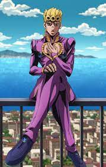
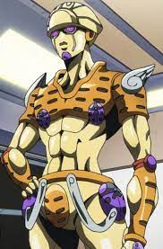
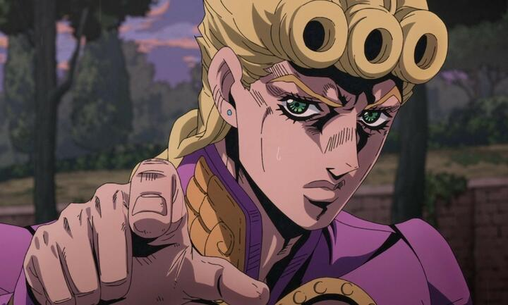

Джорно Джованна (Jorno Jobanana Joruno Jobāna?) - це головний протагоніст Золотого вітру і п'ятий ДжоДжо в серії манги Неймовірні пригоди ДжоДжо.
Як незаконнонароджений син Діо Брандо, зачатий вкраденим тілом Джонатана Джостара, Джорно Джованна, вперше представлений як Харуно Шіобана (підліток, що живе в Італії). Він говорить про свій намір приєднатися до могутньої банди Passione і про свою мрію стати "Ганг-стар" (об'єднання слів "Гангстер" та "Джостар"), щоб відновити чесноту продажної мафії. Джорно - це користувач стенду з природним походженням, що має могутнє джерело життя Gold Experience в бою.
Джорно - підліток середнього зросту і стрункої, але м'язової статури, набагато меншого зросту, ніж попередні ДжоДжо. У нього золотаве волосся помірної довжини, зав'язане назад коротким плетеним хвостом, з трьома характерними завитками великого розміру, розташованими в ряд над його чолом. Його волосся спочатку було чорним і неохайним, але змінилося після пробудження його стенду. Його очі, особливо присутні у попередніх зображеннях, загострюються на кінцях, що нагадує очі його батька.
Джорно носить костюм із двох частин з картатим хвостом та декількома декоративними елементами, включаючи емблеми у формі крил на комірах та отвір у формі серця в ділянці грудей. Найбільш відмінною рисою його костюма є три емблеми сонечка, розташовані по обидва боки від його грудей і безпосередньо під його застібкою-блискавкою, що відповідають зовнішньому вигляду його стенду. Пізніше на його туфлях також була та ж емблема сонечка. Колірна гама його костюма часто змінюється на різних зображеннях, але найпоширеніші кольори - синій із золотим та рожевий із зеленим.
Gold Experience

Gold Experience - це стенд Джорно Джованни, що з'явився в п'ятій частині серії Неймовірні пригоди ДжоДжо, Золотий вітер.
Коли був проткнутий стрілою, еволюціонував у Gold Experience Requiem.
Gold Experience - гуманоїдний стенд стрункої статури та середнього зросту, як у Джорно. Верх голови схожий на типовий шолом солдата, з вирізаною міткою, схожою на букву J, що виходить з очей з обох боків. На плечах знаходяться стилізовані крила і великі сонечка по всьому тілу.
Його дизайн заснований на жуку-скарабеї, що є символом творіння в стародавньому Єгипті і на сонечках, що уособлюють регенерацію з ангельськими крилами, що уособлюють символ світу.
Він носить ремені, схожі на підтяжки на штанах Діо.
Gold Experience не показує ознак особистості і стенд немає власної свідомості. Його крик під час бою - "MUDA MUDA MUDA!", Що є посиланням на бойовий клич стенду The World.
Gold Experience – стенд ближнього бою, максимальна відстань ударів якого – 2 метри. На відміну від стендів того ж типу (таких як Star Platinum або Crazy Diamond), Gold Experience не дуже сильний. Його удар не особливо відрізняється від помаху середньої людини, проте стенд все ще здатний завдавати множинної серії ударів нелюдської швидкості. Так він здатний ламати, наприклад, мотоцикли чи автомобілі.
Історія

Джорно Джованна - юнак з Італії. Його справжнє ім'я - Харуно Сіобана (яп. 汐華 初流乃), а справжня зачіска - темне і пряме волосся. Під час подій манги Golden Wind йому виповнилося 15 років. Він син японки і Діо Брандо, лиходія першої та третьої частини манги Jojo, але біологічно вважається сином Джонатана Джостара, оскільки Діо на той момент був носієм тіла Джонатана. Тобто Джорно має англо-японське коріння, але сам виріс в Італії і є її громадянином. Хоча Джорно не є біологічним сином Діо Брандо, він успадкував від нього ряд рис, зокрема бойовий вигук Муда Муда і схильність жорстоко розправлятися з ворогами.
У ранньому дитинстві мати повторно вийшла заміж за італійця, і вони переїхали до Італії. Дитинство Джорно проходило негладко: його мати гуляла, прийомний батько дуже часто карав його, а однокласники знущалися з нього. Це було доти, доки одного разу випадково не врятував одного з мафіозі своїми здібностями. Тоді він зрозумів, що авторитет має значення, і відтоді мріє стати «гангстерською зіркою» (gangstar).